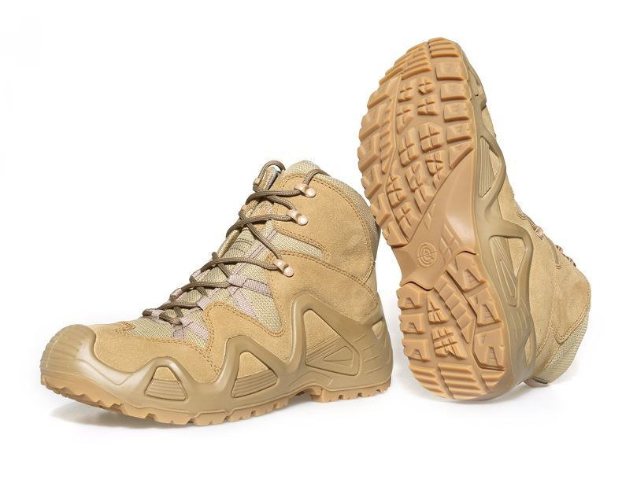
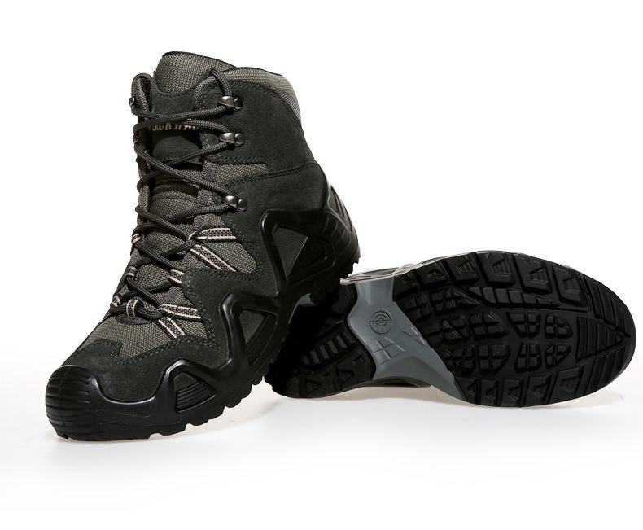
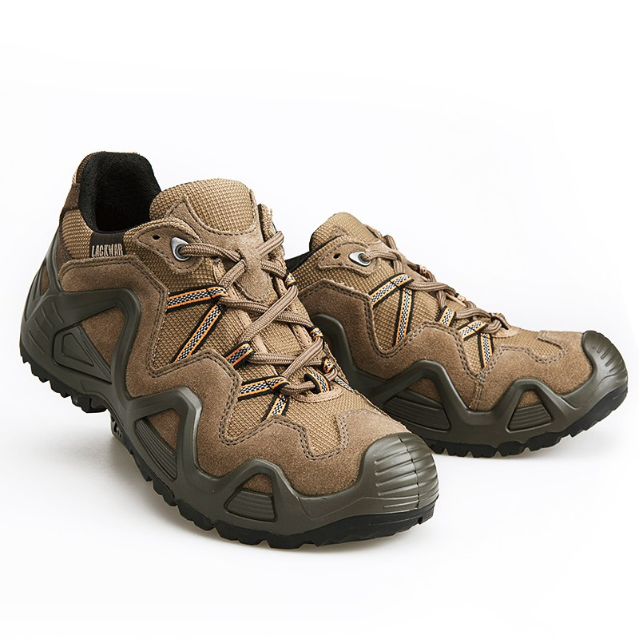
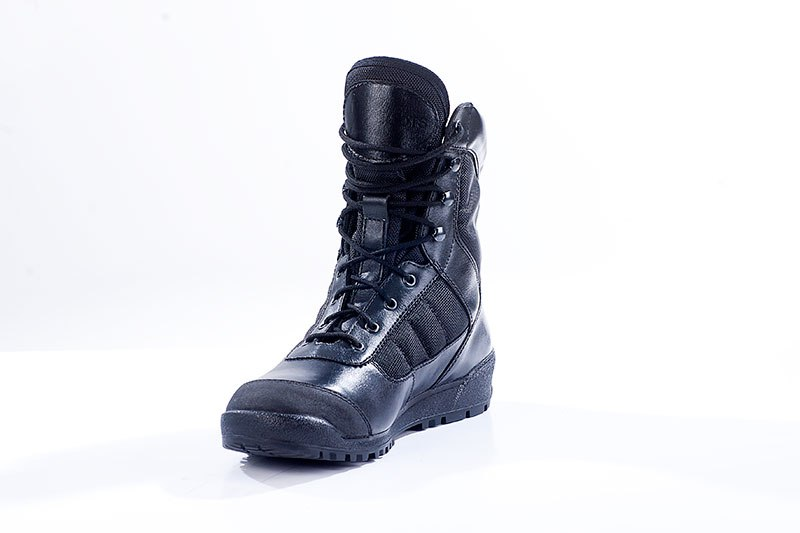
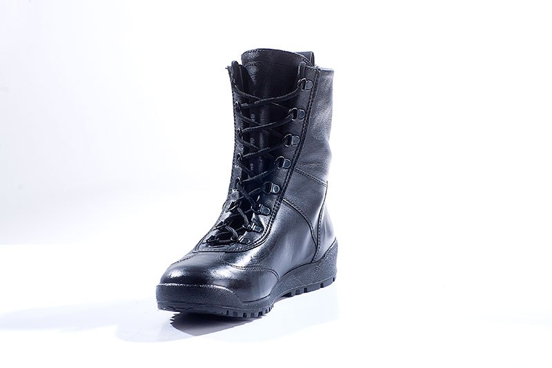

|  |
Ботинки трекинговые Lackwar LXZ004 (Desert) Поверхность выполнена из прочного водостойкого нубука толщиной 2,2 мм и материала Cordura, это сочетание гарантирует высокую износостойкость, даже в экстремальных условиях, а перфорированная кожа сохраняет стопы сухими. ➖ Закрытые крючки из легкого металла позволяют шнуровать ботинки быстро, что так важно в полевых условиях. ➖ Промежуточная часть подошвы из полиуретана, минимизирует вес ботинка, обеспечивая максимальную поддержку. ➖ Уникальная конструкция защищает обувь от износа и истирания даже при постоянной носке. ➖ 2 стельки с функцией климат-контроля. ➖ Стабилизатор из плотного нейлона. ➖ Подошва с технологией Cross Duty. Цвет: Desert |
|  |
Ботинки трекинговые Lackwar LXZ004G (Smoky gray) Поверхность выполнена из прочного водостойкого нубука толщиной 2,2 мм и материала Cordura, это сочетание гарантирует высокую износостойкость, даже в экстремальных условиях, а перфорированная кожа сохраняет стопы сухими. ➖ Закрытые крючки из легкого металла позволяют шнуровать ботинки быстро, что так важно в полевых условиях. ➖ Промежуточная часть подошвы из полиуретана, минимизирует вес ботинка, обеспечивая максимальную поддержку. ➖ Уникальная конструкция защищает обувь от износа и истирания даже при постоянной носке. ➖ 2 стельки с функцией климат-контроля. ➖ Стабилизатор из плотного нейлона. ➖ Подошва с технологией Cross Duty. Цвет: Smoky Gray |
|  |
Кроссовки трекинговые Lackwar Ботинки европейского качества. ➖ качественные материалы, отличное качество пошива, ➖ анатомическая стелька, ➖ удобная форма поверхности внутри ботинка, ➖ отличная фиксация ноги, ➖ крепкие шнурки, качественная и долговечная внутренняя "обшивка".v Цвет: Brown |
|  |
Берцы Бутекс "ВАЙПЕР" модель 2331 Данная модель является классикой "тактического" полицейского ботинка. Прошла испытания во многих специальных подразделениях России. Получила самые высокие оценки по таким показателям как, износоустойчивость и комфорт, от сотрудников СОБР "БУЛАТ". Верх комбинированный: натуральная хромовая кожа (1.4 – 1.6) + высокопрочная ткань из не текстурированной нейлоновой нити 1680D. Подкладка: сетка ламинированная Подошва: каучук повышенной износостойкости (Италия), BUTEK 1. Метод крепления подошвы: клеевой. Супинатор: металлический. Подносок и задник: усиленный из термопластического материала. Размеры: 40-46. Глухой клапан предохраняет ногу от воздействия окружающей среды (пыль, грязь). Цвет: черный. Носочная часть укреплена – кожа с высокопрочным ПУ покрытием «Матрикс» ( Италия ). Вес: 545 гр. |
|  |
Берцы Бутекс "КОБРА" модель 12011 ШТУРМОВЫЕ БОТИНКИ ГОРОДСКОГО ТИПА Легкие демисезонные ботинки из тонкой гидрофобной кожи на гибкой резиновой подошве клеевого метода крепления. В качестве подкладки применена плотная ПВХ сетка. Носочная и пяточная часть ботинка для сохранения формы продублированы термопластическим материалом. Д -образная фурнитура для шнуровки позволяет быстро снять и надеть ботинок, не вынимая шнурка из петель. Глухой клапан препятствует попаданию внутрь ботинка посторонних предметов. Верх комбинированный: гидрофобная кожа (1.2–1.4 мм), “DRYWALKSYSTEM” (R) (ЗАО «РУССКАЯ КОЖА»)+ на голенище эластичная натуральная кожа. Подкладка: сетка. Подошва: каучук повышенной износостойкости (Италия), BUTEK 1. Метод крепления подошвы: клеевой. Подносок и задник: усиленный из термопластического материала. Размеры: 40-46. Глухой клапан предохраняет ногу от воздействия окружающей среды (пыль, вода, грязь) Скоростная шнуровка. Цвет: черный. Вес: 570 гр. |